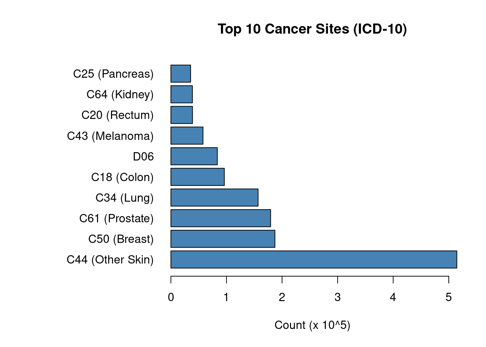
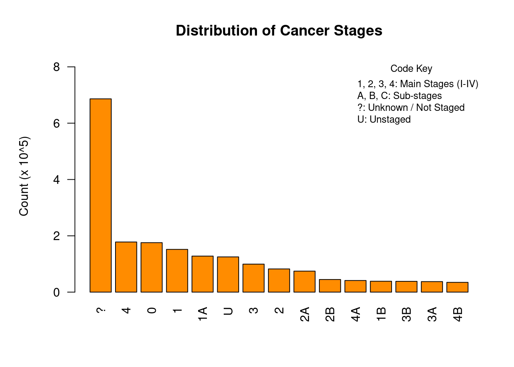

data_path <- "data/sim_av_tumour.csv"
df <- read.csv(data_path)
cat("Data loaded successfully.\n")Data loaded successfully.cat("Rows:", nrow(df), "\n")Rows: 1995570 cat("Columns:", ncol(df), "\n")Columns: 37 This report details the analysis of the sim_av_tumour.csv dataset from the Simulacrum v2.1.0 project. The Simulacrum is a synthetic dataset derived from the National Disease Registration Service (NDRS) in England. It mimics the structure of real cancer data while preserving patient anonymity.
The goal of this analysis is to explore: 1. The most common cancer diagnoses (by ICD-10 code). 2. The distribution of cancer stages at diagnosis.
We begin by loading the dataset.
data_path <- "data/sim_av_tumour.csv"
df <- read.csv(data_path)
cat("Data loaded successfully.\n")Data loaded successfully.cat("Rows:", nrow(df), "\n")Rows: 1995570 cat("Columns:", ncol(df), "\n")Columns: 37 We identify the most common cancer types using the SITE_ICD10_O2 column. We group by the first 3 characters of the ICD-10 code to get the main cancer category.
Common ICD-10 Codes: * C50: Malignant neoplasm of breast * C61: Malignant neoplasm of prostate * C34: Malignant neoplasm of bronchus and lung * C18-C20: Colorectal cancers * C44: Other malignant neoplasms of skin
# Helper function for labels
icd10_map <- c(
"C50" = "Breast",
"C61" = "Prostate",
"C34" = "Lung",
"C18" = "Colon",
"C19" = "Rectosigmoid",
"C20" = "Rectum",
"C43" = "Melanoma",
"C44" = "Other Skin",
"C67" = "Bladder",
"C25" = "Pancreas",
"C64" = "Kidney",
"C90" = "Mult. Myeloma",
"C92" = "Myeloid Leukemia",
"D05" = "Carcinoma in situ (Breast)"
)
get_cancer_label <- function(code) {
if (code %in% names(icd10_map)) {
return(paste0(code, " (", icd10_map[code], ")"))
} else {
return(code)
}
}
if("SITE_ICD10_O2" %in% names(df)) {
df$SITE_MAIN <- substr(df$SITE_ICD10_O2, 1, 3)
site_counts <- sort(table(df$SITE_MAIN), decreasing = TRUE)
top_10_sites <- head(site_counts, 10)
# Prepare data for plotting
labels <- sapply(names(top_10_sites), get_cancer_label)
counts_scaled <- top_10_sites / 100000
# Plot
par(mar=c(5, 12, 4, 2) + 0.1)
barplot(counts_scaled,
main = "Top 10 Cancer Sites (ICD-10)",
xlab = "Count (x 10^5)",
names.arg = labels,
col = "steelblue",
horiz = TRUE,
las = 1)
}
Interpretation: The plot highlights the prevalence of major cancer types like Breast (C50), Prostate (C61), and Lung (C34) cancer, which aligns with national statistics.
Next, we analyze the stage of cancer at diagnosis. Staging is critical for determining prognosis and treatment options.
Code Key: * 1, 2, 3, 4: Main TNM Stages (I, II, III, IV). * A, B, C: Sub-stages (e.g., 1A is early Stage I). * ?: Unknown or Not Staged. * U: Unstaged.
stage_col <- NULL
if("STAGE_BEST" %in% names(df)) stage_col <- "STAGE_BEST"
if(!is.null(stage_col)) {
stage_counts <- table(df[[stage_col]])
stage_counts_sorted <- sort(stage_counts, decreasing = TRUE)
top_stages <- head(stage_counts_sorted, 15)
counts_scaled <- top_stages / 100000
legend_text <- c(
"1, 2, 3, 4: Main Stages (I-IV)",
"A, B, C: Sub-stages",
"?: Unknown / Not Staged",
"U: Unstaged"
)
par(mar=c(5, 5, 4, 2) + 0.1)
barplot(counts_scaled,
main = "Distribution of Cancer Stages",
ylab = "Count (x 10^5)",
col = "darkorange",
las = 2,
ylim = c(0, max(counts_scaled) * 1.2))
legend("topright", legend = legend_text, bty = "n", cex = 0.8, title = "Code Key")
}
Interpretation: The distribution shows a spread across all stages. Notably, there is a significant number of “Unknown” (?) or “Unstaged” (U) cases. This is a common feature in cancer registry data, often due to data collection challenges or patients being too unwell for full staging.
This analysis of the Simulacrum synthetic dataset successfully replicated expected patterns in cancer epidemiology. The high frequency of common cancers and the presence of unstaged records demonstrates the dataset’s utility for testing analysis pipelines before applying them to real, sensitive patient data.